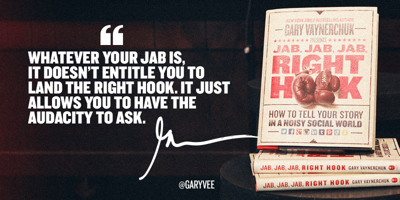
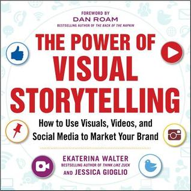

#1 Positioning by Al Ries & Jack Trout

This is one of those great classic books in marketing, but it’s the first book that helps you understand how to deal with communicating to skeptics and the media over-run public. It mostly describes and talks about the most revolutionary way to approach the need to have a “position” in future and prospective customers’ mindset. It tells a tale that reflects how a company has its own strengths and weaknesses and even addresses those of competitors. With this book, you’ll learn not just how to use the most advanced and popular ad techniques but will help you better perfect the art of capturing the biggest market shares and on how to become an infamous household name.
Things to look out for in this book:
- The use of the most advanced and popular ad techniques, but will help you better perfect the art of capturing the biggest market shares and on how to become an infamous household name.
- Building a strong strategy around your competitors weaknesses
- How to reposition your strong competitors and create their weak areas
- How to use your current position at its best and most advantageous state
- Choosing the best name for your product/brand
- Being able to determine why and when less could be more
- Hone the ability to analyze recent trends that can affect you
#2 Epic Content Marketing by Joe Pullizzi
Being the founder of CMI or the Content Marketing Institute, one of the most popular content marketing educational resources for brands, it is assuring to say that Joe Pulizzi knows what he’s talking about in terms of content marketing. Having one of the fastest growing business since it started, he has the best advice about how to get things like this done right.
This book takes you through a step by step guide in the process of developing a story that will not just inform but also entertain your customers. Simply speaking, he shows you how to get them to act without really having to instruct them in doing so. This book gives you an upper hand in positioning your business.
Seeing as Pulizzi is a trusted expert in this field of sorts, to get a hang onto how he does it so well he shares his six most important principles:
- Your content should and must fill those unmet needs and answers the questions of your customers
- In delivering content, you must do so consistently
- You should have content written in your own voice, with added humor
- Instead of giving balanced reports, express opinions; the good kind
- Avoiding sales speak is a must, take notice that it will destroy your contents value
- Always aim to produce and share the best and only the best of your content related to your niches
#3 Youtility: Why Smart Marketing Is about Help Not Hype by Jay Baer
This book focuses mainly on the customer, and not just that but also on the need and the importance of marketing to help customers. It’s all about building value for your clients. Brands always promise their users something. This book reminds us that our customers value these promises and the experience enough to want to buy the merchandise.
Some people can consider it value proposition, but in honesty, customers will need to get something out of our marketing. This book gives you a modern view of two core marketing values. It teaches us that helpfulness is not what makes up a brand, but it can be one of the best methods.
To achieve Youtility, the book makes note of the 3 different facets one should consider:
- Provide Self-Serve Information – Simply because customers prefer to help themselves to information before purchasing something rather than talking to a sales person.
- Practice Radical Transparency – Answering customer questions in an open, comprehensive and detailed manner helps you gain there trust.
- Have Real-Time Relevancy – Customers crave real-time information, which can be served through mobile friendly content and apps.
#4 Tribes: We Need You to Lead Us by Seth Godin

The book argues over the fact that change can best be effected by a tribe. So think about it, our innovators are the ones who assemble similar individuals and get us excited about the products. Godin explains that these “tribes” are within our corporation, and anyone can be a leader; though sometimes are usually kept from their own potential due to fear and criticism.
The book’s helpful tips are perfected with the help case studies which explain that: “we can be leaders if we want, tribes are the way of the future and change is good” This book is a game-changer, that helps your mind pull up something you’ve read from it.
#5 How Customers Think: Essential Insights into the Mind of the Market by Gerald Zaltman
This book provides a great new thought to understanding why and how customers buy. It shows us how despite resources spent on marketing research, it’s a little fact that 80% of offerings fail. Why? Because patterns have become so predictable. The usual and conventional how-to is this: customers want something, a company creates it, but when it’s available – customers don’t buy it.
This is simply because of the fact that customers don‚Äôt actually know what they want. Gerald Zaltman gives us an explanation to this puzzle and concludes that, at some point, customers do know. But because our own marketing’s most overused tools like surveys, questionnaires, and focus groups have become such conventional practices, they no longer dig deeply enough to help them discover and express what it is they truly want.
This book is mind-opening, because of the fact that it argues that 95 percent of thinking happens in our unconscious. That‚Äôs why when it comes down to unearthing your customers’ desires, it requires us to understand so much more that is the “mind of the market‚Äù.
Zaltman offers perpetual insights into what happening within the complicated system of our mind, brain, body, and society. He gives us a closer illustration of how leading companies are “mining the unconscious” while providing us with ¬†remarkable results due to the following:
- Development of research questions that speak to our consumers unconscious minds.
- Evocable and valuable meaning through a customer’s brand communications.
- Measurement of consumer reactions to certain marketing and advertising strategies.
- The building of what reflects a market to help boost a customer’s satisfaction, loyalty, and sales.
- Understanding how our own minds work and how we can come up with new creative things.
- The realization of the fact that the mind of the market is waiting to be explored, and it’s a competition of who gets there first.
#6 Jab, Jab, Jab, Right Hook: How to Tell Your Story in a Noisy Social World by Gary Vaynerchuk

Gary Vaynerchuk brilliantly writes a book that is both educational and entertaining. Jab, Jab, Jab, Right Hook: How to Tell Your Story in a Noisy Social World is packed with timely information about web marketing, outstanding content and social media.
Whether you’re an entrepreneur, small business owner or a marketer to a Fortune 500 company, this book is a must-read for you. Trust me, once you start it you can’t put it down until the end!
In this book, you will learn how to create shareable, relevant and attention-grabbing content that will ensure brand growth through word of mouth.
Gary breaks down today’s major social media platforms with great detail. He walks you through all the features, the demographics and what content works for each platform to make sure you understand how to best benefit from them. There are tons of examples for each social network, from big or small companies, complete analysis of good and not-so-good posts to learn from.
In this book, you’ll also learn how to create outstanding content and to prepare a context for the right hook.
The characteristics of a perfect right hook are:
- It makes the call to action simple and easy to understand.
- It’s perfectly crafted for mobile, as well as all digital devices.
- It respects the nuances of the social network for which you are making the content.
#7 The Power of Visual Storytelling: How to Use Visuals, Videos, and Social Media to Market Your Brand by Ekaterina Walter and Jessica Gioglio

We live in an age where there is no shortage of user-generated content, especially visual content. With the rise of the mobile devices, taking and sharing a photo or video online has never been easier. Users can record their memories and emotions and share them with their loved ones in real-time through social media channels.
The human brain process images more quickly than text: “Visuals are processed 60,000 times faster than text by the human brain and 90% of information transmitted to the brain is visual.”
Ekaterina Walter and Jessica Gioglio bring to the table years of hands-on experience, making “The Power of Visual Storytelling” an invaluable resource and a must read for all the marketers and social media teams out there.
The book is loaded with incredible case studies from leading brands that illustrate best practices in visual marketing and storytelling. After an overview of all the types of visuals that marketers can benefit from, the authors introduce you to the key elements of visual storytelling:
- Embrace Visual Imagery
- Personalize, Don’t Spray
- Make Yourself Useful
- Be Human
- Tell a Story
- Be Shareworthy in Everything You Do
- Live in the Moment
Each element is explained with colorful stats and pictures that reinforce the power of the visuals when telling a story.
The authors paint the current status of all the social networks and give incredible tips for engaging on each platform: Pinterest, Youtube, Facebook, Twitter, Instagram, Tumblr, SlideShare, and Google+. All the ideas are backed up by the case studies from thought leaders in the field.
Next, you will learn all the steps involved in developing a visual storytelling map, from setting up your goals to shaping your visual story and crafting stunning visuals to meet your goals.
#8 Inbound Marketing, Revised and Updated: Attract, Engage, and Delight Customers by Brian Halligan and Dharmesh Shah
Inbound Marketing, written by the co-founders of HubSpot, Brian Halligan, and Dharmesh Shah, is a great starting point for all the digital marketers at the beginning of their journey. It is a very good primer on getting found online, attract leads and convert them into loyal customers. If you’re an experienced inbound marketer, you may find this book a good opportunity to refresh some basic concepts in web marketing and social media.
The book is written in a simple, comprehensive format with plenty of useful visuals and case studies for each chapter. The authors get straight to the point and deliver the basic concepts of inbound marketing in short, easy to read, chapters.
Everything you need to know about designing your website, creating remarkable content and getting your content found by the target audience, is described in detail in the first chapters of the book. At the end of each chapter, you will have action items to get to practice everything you learn.
You get to learn basic concepts about SEO and how to get higher in the Google search results. Also, all the social media platforms are described in a beginner level detail to make sure you get the most out of their features.
Next you’ll learn how to attract, nurture leads and convert them into customers, how to measure and improve your strategy through testing, and of course how to create your winning inbound marketing team.
Knowing the tools and the basic concepts of inbound marketing are crucial for anyone starting a new business and trying to get their content in front of the potential customers.
#9 The Art of Social Media: Power Tips for Power Users by Guy Kawasaki and Peg Fitzpatrick
If you’re looking for valuable, actionable tips that will help you make meaningful connections online and bring value to your community, this book is for you. The Art of Social Media: Power Tips for Power Users is for social media marketers, entrepreneurs, business owners or anyone who want to go PRO in social media. The book is packed with advanced insights, tips, and tricks that help you build a consistent and valuable online presence.
This is not your usual “how-to” book. Using an easy to follow and unique writing style with a little humor to make it even more entertaining, Guy Kawasaki and Peg Fitzpatrick, give us a complete map of social media. You get to learn from the expertise of someone like Guy, who has over 1.45 million followers on Twitter alone. And you also get to experience the authors’ unique personalities on each page of the book. It’s like talking to your mentors in your living room.
All the powerful tips and tools are described in great detail throughout the book with useful case studies and images. You start by learning how to present yourself in the social space, how to be a mensch (a kind and honorable person who does the right thing the right way) and how to perfect your posts. You move to learn how to integrate your social media to your blogging and become a true marketing pro. And finally, you’ll learn how to get more followers and expand your reach.
The Art of Social Media is a reference guide for anyone dealing with social media on a daily basis.
#10 Growth Hacker Marketing: A Primer on the Future of PR, Marketing, and Advertising by Ryan Holiday
Growth Hacking is a scientific approach to marketing, focusing on the “who the customers are” and “where they are”. Ryan Holiday describes famous case studies of how startups applied growth hacker tactics to become the today’s multi-billion dollars companies.
The days of taking the “Hollywood” approach to marketing (expensive events, billboards and everything involved in traditional marketing) are over. Today you can reach your audiences without spending a small fortune, but with clever tactics and the right product, that people actually want.
Throughout this book, you’ll get to learn from the many examples of real startups that successfully applied growth hacking tactics and went viral. You’ll learn how to find your own growth hacks and how to achieve virality.
Unlike the old ways of marketing a product, growth hacking isn’t a campaign with a deadline. It’s a continuous process of optimization. You need to constantly track your results, to improve and iterate to survive.
Andrew says
Good list, if i only had time to read all of them üôÇ
Adam says
Haha, well time is something we’d all need more of üôÇ You don’t need to read them all at once though, start with one and see where it goes.
Dina says
I’ve read “The power of visual storytelling” and I can say it deserves to be on this list. Maybe even No 1 book to read.
Sophia says
Thanks for recommendations!
I would like to add one suggestion too. #GetSocialSmart: How to Hone Your Social Media Strategy – by Katie Lance. I loved it.
Adam says
Thanks for tip, will check it out as well üôÇ
Sascha says
Call it backwards, old school or whatever, but I still prefer books (love the smell of it). I mostly appreciate the time and effort spent on writing one. The list looks promising..any favorites?
Lukas says
I’m into “The Art of Social Media: Power Tips for Power Users by Guy Kawasaki and Peg Fitzpatrick” and so far so good, would recommend it.
Adam says
Thank you for your input Lukas
Cameron says
Hi there,
I love Peg’s Fitzpatrick blog, but haven’t read the book yet. Now you reminded me to put it on my list. Thanks
Adam says
Cool, remember to come back after you read it to let us know how you found it.